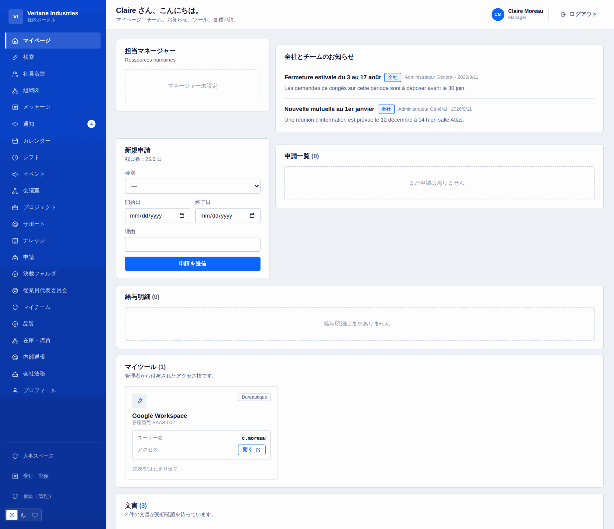
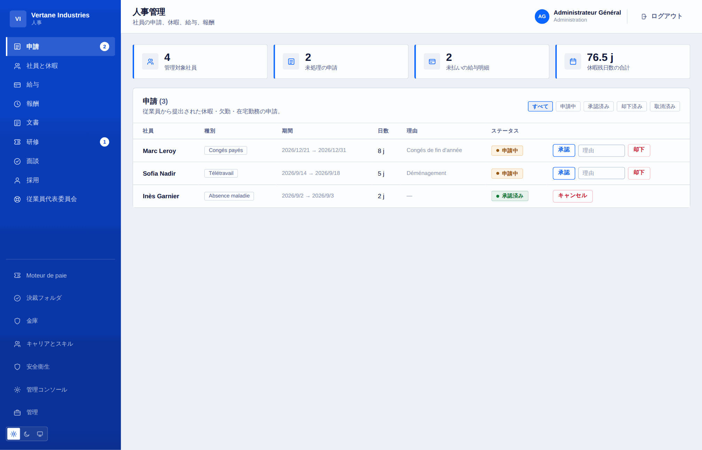
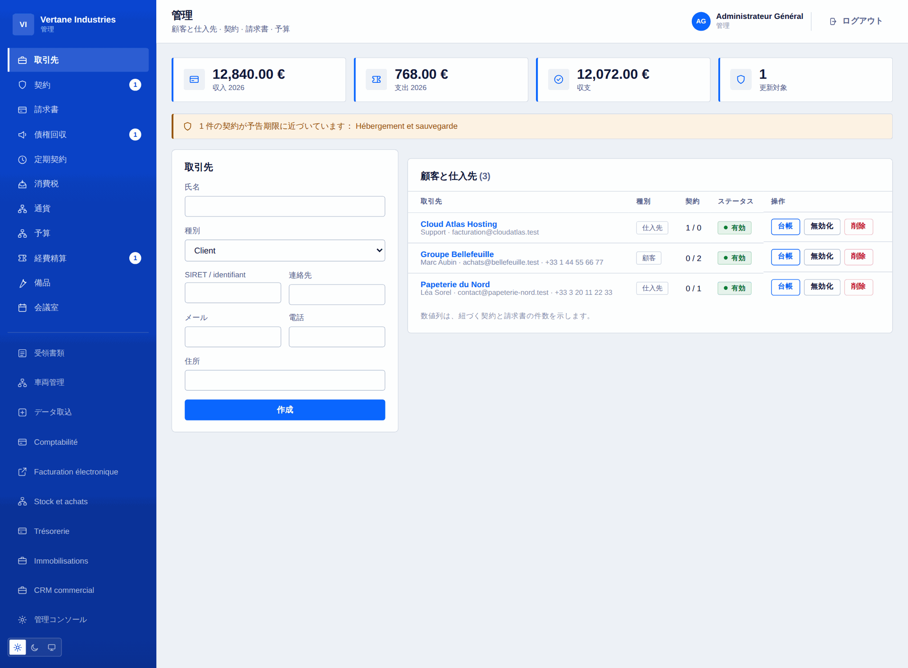
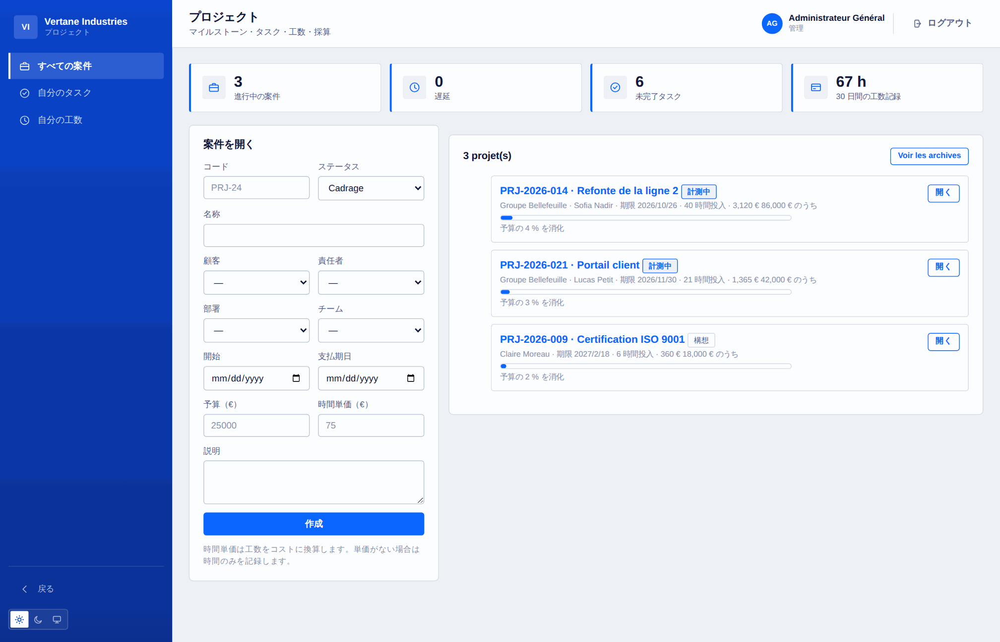
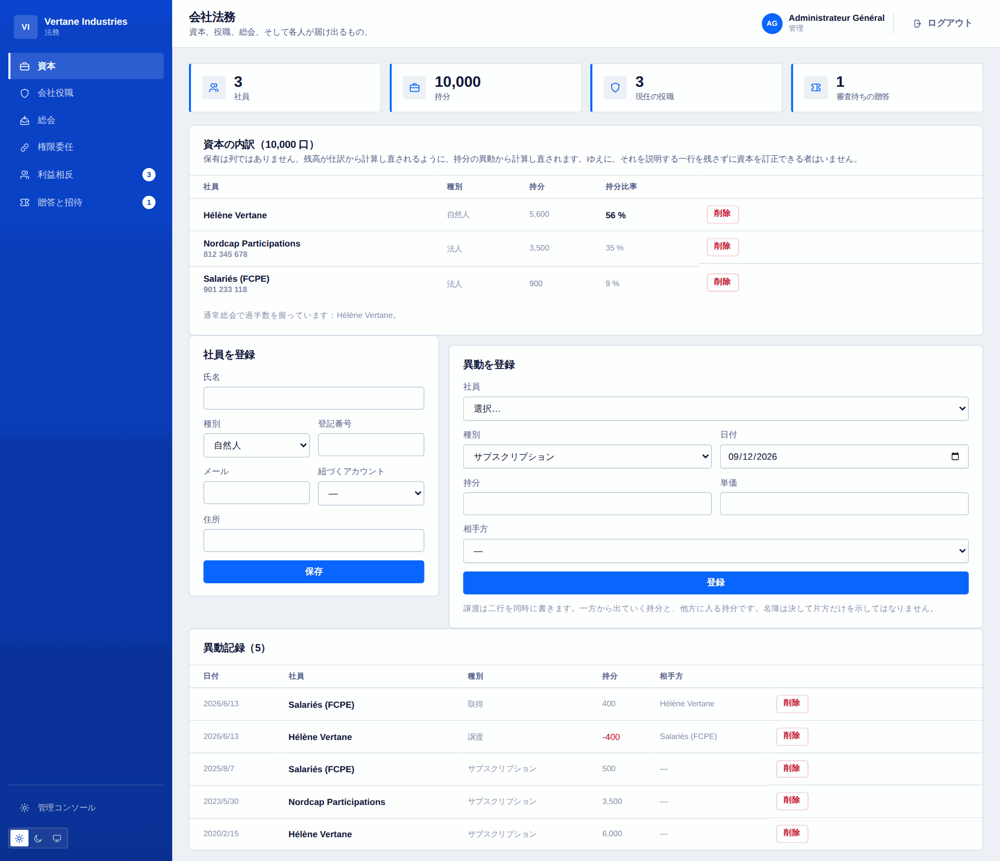

機能
Toutadmin にできること、すべて
領域ごとの完全な一覧です。どの行も、出荷されテストされたコードに対応します。構想ではありません。
基盤と組織
従業員のスペース
人事
採用と人材
安全衛生と従業員代表
財務と管理
会計、給与、消費税
購買、在庫、債権回収
プロジェクト、工数、採算
サポートとナレッジ
業務と総務
経営とガバナンス
情報システムと開発
コンプライアンス、会社法務、個人データ
121 · 「モジュール」と記された機能は、必要になったときコンソールから有効化します。
01
基盤と組織
ほかのすべてを支えるもの。アカウント、所属、そしてすべてのスペースに共通する用語です。
- アカウントと兼務できる役割：管理者、人事、経理、情報システム、通報担当
- 上長という立場は実際の統括関係から導かれ、手で与えることはありません
- 部署とチーム、範囲ごとに複数の上長、所属はリクエストのたびに読み直し
- 管理職を含む図解の組織図と、どこにも所属していない人の一覧
- 検索と絞り込みのできる名簿。表示の可否は管理側だけが決めます
- 社内メッセージと、管理側が設定する業務用アドレス
- 入口で切り分けた全体検索：見る権利のないものは検索さえされません
- 既読確認付きの、個人ごとの通知センター
- CSV の一括取り込み：検査済みのプレビュー、全件書くか一件も書かないか
- 導入ウィザード、インスタンス設定、有効化できる七つのモジュール
- 16 言語、3 つの配色、ライト／ダーク／システムのテーマ、レスポンシブ表示

02
従業員のスペース
誰もが朝に開くページ。自分に関わることだけが並びます。
- 個人ダッシュボード：上長、お知らせ、申請、確認待ちの書類
- 休暇、代休、欠勤、在宅勤務の申請：営業日を自動計算し、週末は除外
- 最新の休暇残日数と、理由付きの調整履歴
- 給与明細は閲覧でき、金庫に五十年保管されます
- 個人カレンダーとチームの共有カレンダー
- 週間シフト、待機、常駐勤務
- 割り当てられたツールは各自の ID 付き——外部サービスのパスワードは保存しません
- プロフィール：写真、紹介、電話、言語、パスワード、全セッションの終了
- フリーランス向けのストップウォッチ打刻。同時に進行できるのは一件だけ
- 利害関係と贈答の申告。本人だけに見えます

03
人事
入社から退職までの従業員ファイルと、それに伴う期限。
- 残日数を差し引く承認、理由を伴う却下、日数を戻す取り消し
- 給与明細：作成、支払いの追跡、一括生成
- 記名の受領確認付きの社内文書
- 研修：カタログ、開催回、申込、費用と時間
- 年次面談：実施、雛形、記録
- 入社と退職：追跡できるチェックリスト、作業ごとの担当と期限
- 力量と資格、更新日と事前の警告付き
- 一対一の面談：共有する要約と、上長の手元に残るメモを分離
- 退職後も開ける電子金庫。書類は指紋で封印
- 簡易電子署名：順序のある回付、指紋、封印、証明書
- 有期契約：当日にアカウントが自動で閉じます

04
採用と人材
応募から初日まで、間に表計算を挟みません。
- 求人と、段階ごとに追跡する応募
- 履歴書の受け取り：PDF、DOCX、テキスト。リポジトリの外に保存
- 本文の抽出と、検索できる履歴書データベース
- 重み付けの基準、点数、しきい値、応募の順位付け
- 採用が決まればそのまま入社手続きの流れへ
- 社内アンケートと職場の体温計。構造上、匿名です
- 回答が五件未満のときは結果を表示しません

05
安全衛生と従業員代表
書面で残すべき義務。放っておいても自分から思い出させます。
- リスクアセスメント：作業単位、危険源、評価、対策、日付入りの見直し
- 労働災害とヒヤリハットの記録、休業日数
- 保護具：記名での支給、有効期間、更新
- 健康診断：採用時、定期、復職時、申し出による
- 従業員代表：選挙、選挙人名簿、無記名投票、任期とその満了
- 委員会の会議、従業員向けの福利と給付
- 任期が終わると管理スペースは自動で閉じます

06
財務と管理
取引先、契約、入ってくるお金と出ていくお金。
- 得意先と仕入先の完全な台帳：担当者、契約、請求書
- 契約、とりわけ予告期間：解約期限を計算して事前に知らせます
- 双方向の請求書。税込額を計算し、遅延は支払期日から導出
- 部門別・年度別の予算。消化額は自動で集計
- 経費精算：提出、承認、支払——どれか一つだけということはありません
- 取引先のコンプライアンス書類。日付を持ち、期限の四十五日前に通知
- 点数化した仕入先評価：平均ではなく直近の評価を採用
- 複数通貨に対応し、レートは各伝票の発行時に固定
- 継続請求：契約は型、請求書は伝票
- 受領請求書の自動読み取りと、経理メールボックスの IMAP 取り込み

07
会計、給与、消費税
既定ではオフのモジュール。必要になったときに有効化します。
- 複式簿記：勘定科目表、仕訳帳、試算表、総勘定元帳
- 貸借の合わない仕訳は受け付けず、差額がいくらかを伝えます
- 請求書はワンクリックで仕訳へ。会計事務所向けの CSV 書き出しも
- 給与計算：設定可能な料率、総支給から差引支給まで、事業主負担、雇用コスト
- 明細を一行ずつ示す給与明細、一括生成、試算
- 消費税申告：預かり、仮払い、税率別の内訳、繰越還付
- 提出済みの申告は再計算しません。伝票であって、ダッシュボードではないからです
- 電子請求：EN 16931 の検査と CII XML の書き出し
- 資金：口座、入出金、消込、十二週間の見通し
- 固定資産：定額法と定率法の償却、帳簿価額

08
購買、在庫、債権回収
何を発注し、何が届き、何が請求されたか——そして何を払ってもらうべきか。
- 購買申請は上長が、しきい値を超えると経理が承認
- 発注書、入荷、そして三者照合：発注、入荷、請求
- 発注より多い入荷は拒否。請求の差異は名指ししますが、支払いは止めません
- 品目、入出庫、発注点：在庫は入出庫の合計です
- 品目に紐づく明細行は、入荷したその瞬間に在庫へ入ります
- 遅延区分ごとの売掛金年齢表
- 段階的な督促：お知らせ、督促、催告。すでに送った内容に応じて進みます
- 督促はすべて段階と日付とともに記録

09
プロジェクト、工数、採算
プロジェクトがどこまで進み、実際にいくらかかったかを知ること。
- 得意先、部署、チーム、責任者に紐づくプロジェクト
- 日付入りのマイルストーンと、状態別に列で並ぶ作業。優先度と見積付き
- 工数はプロジェクトと作業に付け、一件あたり最大 24 時間
- 採算：時間、時間単価での原価、残る利益、予算の消化率
- 権限は三重の輪：経理、責任者、メンバー
- 人別の工数と、経営ダッシュボード上のプロジェクトの健全性

10
サポートとナレッジ
社内と顧客からの依頼を同じ流れに乗せ、答えを残します。
- 社内と顧客のチケット。優先度、発生元、担当割り当て
- 初回応答の期限は優先度から導かれ、受付時刻を起点に再計算
- 依頼者に見えない社内メモ。応答としては数えません
- カテゴリーで隔離：人事の依頼は人事の外に出ません
- カテゴリー別のナレッジベース、全文検索、公開範囲の調整
- 指標：未対応チケット、遅延、平均対応時間

11
業務と総務
シフト、品質、会議室、車両、受付。
- 人別・日別のシフト：勤務、待機、常駐、在宅勤務
- 重複や承認済みの欠勤があれば、作成の時点で拒否
- 再利用できる勤務パターン、夜勤、週単位の公開
- いま誰が待機しているか、その電話番号とともに
- 品質：不適合、根本原因、是正処置、有効性の検証
- 内部監査：所見、まとめ、所見から不適合への格上げ
- 貸与と返却の記録が残る備品、保有者の履歴付き
- 会議室と予約。重複は誰が使っているかを示して拒否
- 車両：整備、車検、保険、事故、走行距離
- 受付：来訪者名簿、在館者一覧、郵便物の受発信

12
経営とガバナンス
経営が見るもの、そして決めること。
- ダッシュボード：人員、欠勤、請求額、粗利、人件費、資金、サポート負荷
- 目標と主要な成果。それぞれ独自の尺度で、減少方向でも扱えます
- 会議：招集、議題、出欠の確認、議事録
- 理由を添えた決定の記録——二年後に探すのはまさに理由です
- 担当と期限を持つ実施事項。もとの決定に紐づきます
- リスク台帳：固有と残余の評価、5 × 5 のマトリクス、対応、見直し
- 社内イベント：定員、自動のキャンセル待ち、出欠、予算
- すべてのスペースの期限を、ひとつの並べ替えた一覧に

13
情報システムと開発
ソフトウェア資産、アクセス権、障害、そしてチームがリリースするもの。
- ソフトウェア資産：ライセンス数を制約として管理、年額換算、更新
- アクセス権の棚卸し：閉じたアカウントを先に、次に管理者権限
- 時刻付きの IT 障害と、実測された平均復旧時間
- サービス台帳：重要度、責任者、リポジトリ、ドキュメント
- 環境別のリリース記録とデリバリー指標
- バックアップ：毎時のアーカイブ、検証済みの完全性、復元、外部保管
- スコープ付きの読み取り REST API、署名付きの送信 Webhook
- インスタンス全体を JSON で書き出し。書類を含み、秘密情報は除外

14
コンプライアンス、会社法務、個人データ
会社が証明できなければならないことを、その都度残していきます。
- 株主名簿：保有数は異動から導出、譲渡は出入りの両方を記帳
- 役員任期。期間、解任、そして事前に知らせる満了
- 株主総会：株式数による定足数、議案、議決、議事録
- 権限委任：対象、上限額、期間、満了の通知
- 利益相反と贈答：各自が自分の分を申告し、管理側が確認
- 暗号化した内部通報窓口、指名された担当者、コードによる匿名の追跡
- 時刻付きで書き出せ、指紋の連鎖で封印された監査ログ
- GDPR：処理の記録、書き出せる開示請求対応、筋の通った削除
- 設定できる承認フロー：フォーム、しきい値、職務ごとの承認者
